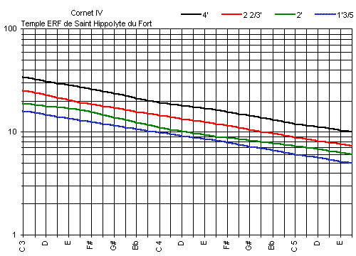

Lors de la restauration de 1992, ce Cornet est apparu comme une
énigme. En effet, les tailles de ce jeu sont extrêmement fines pour quiconque
est habitué à le voir en France. Mais les tuyaux sont manifestement d'origine
et bien prévus (de par les marques de fabrication) pour être un Cornet. On
assiste là, à une indéniable influence allemande, où ce jeu est
infiniment plus destiné à être un soutien de la voix
supérieure dans un accompagnement polyphonique (dans un temple qui, ne l'oublions
pas, se place parmi l'un des deux plus grands de France...) que comme un jeu
récitatif ou concertant. Malgré ce qu'à pu écrire Voegeli au
sujet des fournitures qui ne doivent absolument pas contenir de
tierces1, il semble bien que la disposition
des tirants de registres à la console avec, à droite les flûtes, et
à gauche les anches et les principaux, ne soit pas anodine ; les deux tirants du
cornet et de la fourniture se trouvant l'un au dessus de l'autre... Il résulte à
l'audition de ce jeu un rappel évident de la Sesquialtera allemande qui renforce
encore une logique de facture assez étonnante dans le sud de la France...
